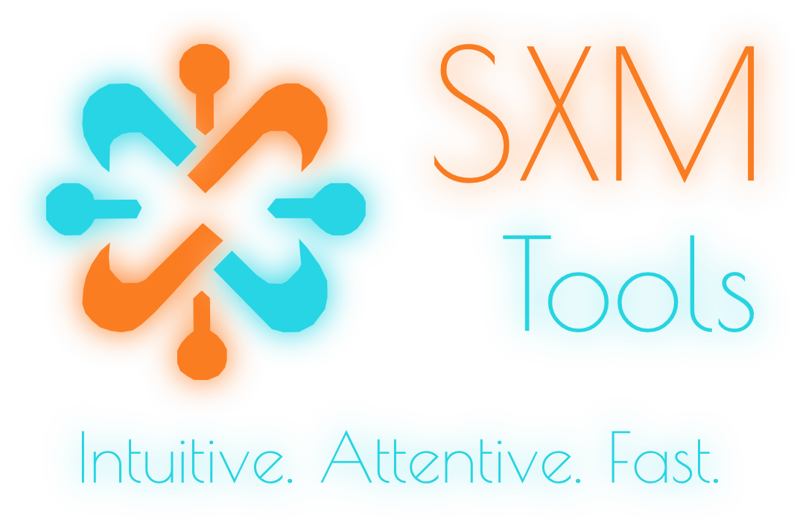
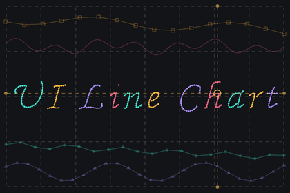
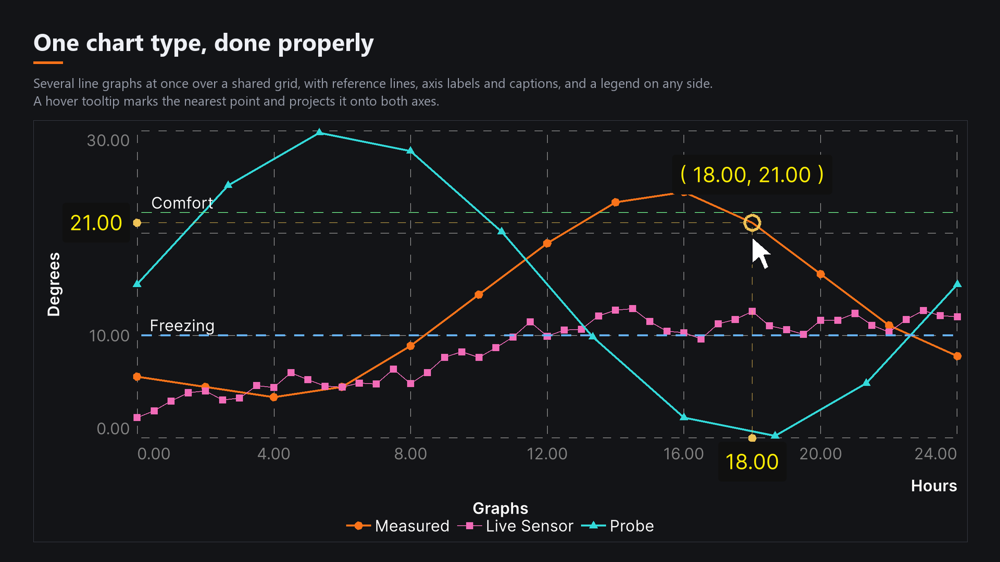
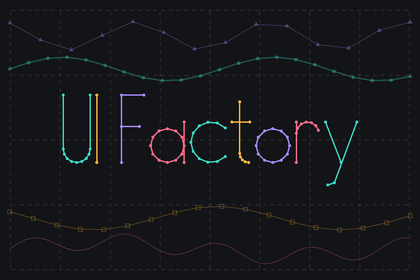
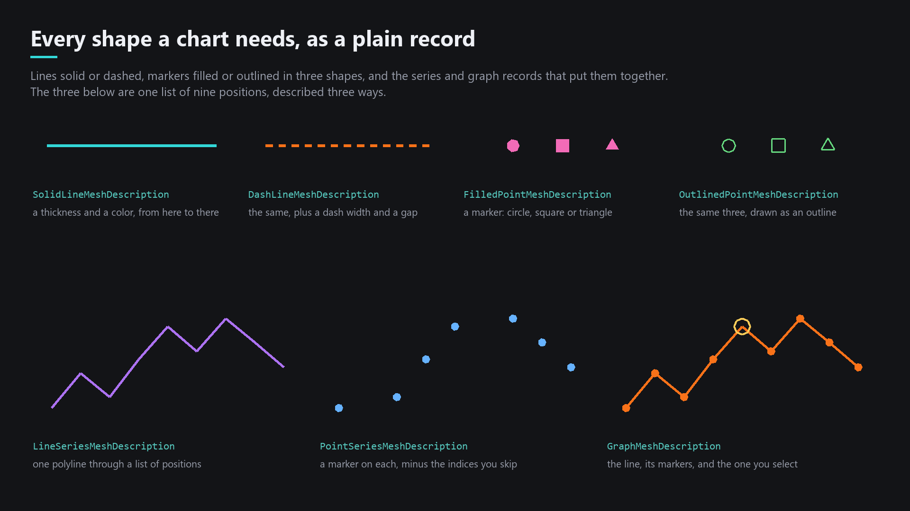
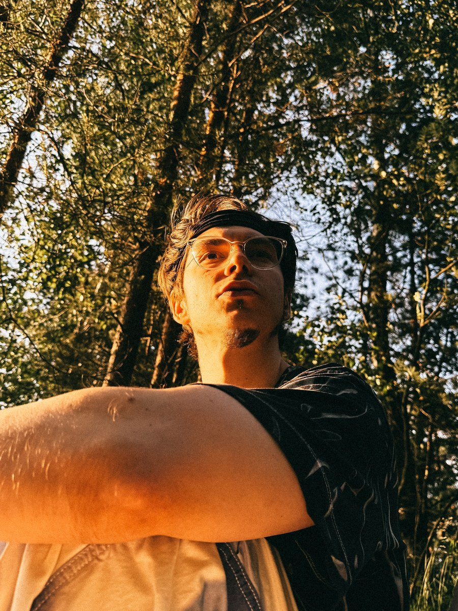

Мобильная версия
SXM Tools

In each one, I try to follow three principles:

UI Line ChartLine chart control for UI Toolkit in Unity.

UI FactoryBuilds meshes for custom UI Toolkit controls.
Questions, ideas
or a problem?
Metta
Corpse
Light of Salva’s Tower
You run, and it follows. It wears a new face every time, but you always know who it is.
Auspicious Birthplace
You are held so close you can’t breathe, and still you are afraid of being let go.
Études
T(1) = 1
T(n) = 2·T(n−1) + 1
⇒ T(n) = 2ⁿ − 1
Hanoi Tower
An experimental environment for proving a popular mathematical statement in the context of the “Tower of Hanoi” game.

Procedural Mesh Generator
A Unity editor tool that generates primitive meshes, bends them with modifiers on the Job System and Burst, and exports them to OBJ.

zRLC Meter
A cross-platform desktop app that measures the impedance and the R, L and C values of a component wired straight to the computer's sound card.

Spatial Partition Structures
A collection of spatial partitioning trees — quadtrees, octrees and their variants — in managed and native forms.

Parallax Effect
A small tool for a parallax effect with images on a UI canvas: layers with their own weights, auto-scrolling, following a camera.

Runner
An endless runner with randomly generated tile obstacles, made as a test task.

Visualizing Math Functions
3D visualization of common mathematical functions, made for learning.
Contact
Thanks — I'll do my best to look into it. If you left an email, I'll reply there.
write another onenot fixed (3)
| Issue | Version | Status |
|---|---|---|
| Tooltip flickers at the chart edgeWorkaround: set the tooltip offset to 4 px or more. | 0.9.14 | Investigating |
When the pointer is within a few pixels of the plot edge, the point tooltip switches sides every frame and appears to flicker. Workaround
| ||
| CSV import ignores a quoted header rowWorkaround: remove the quotes from the header. | 0.9.14 | Planned |
A CSV dataset whose header row is wrapped in quotes is read as data, so the first point becomes Workaroundx,y ← instead of "x","y" 0,6 2,5 | ||
| No support for Unity 2021The minimum is 2022.3. | — | Won't fix |
UI Factory relies on mesh APIs that appeared in Unity 2022.3. Back-porting would mean a second code path for an old editor, so it is not planned. | ||
fixed (1)
| Mesh cache grows after domain reloadFixed in 7.0.2. | 7.0.1 | Fixed |
After every domain reload the factory kept the previous meshes alive. Update to 7.0.2. | ||
| Question |
|---|
| Which Unity versions are supported? |
Unity 6.0 and newer. |
| Can I update the chart from my own script while the game runs? |
Yes. Datasets can be filled and replaced from code at any moment, and the chart redraws itself. The documentation has a step-by-step example. |
| Can I use UI Factory in a commercial project? |
Yes. It is free and MIT-licensed. |
| How do I install it? |
Through OpenUPM or by Git URL in the Package Manager. Both ways are described on the GitHub page. |
About
After studying engineering and years of enterprise web development, frontend and backend, I moved into games in 2020. They've pulled at me since I was a kid.
I'm working toward a game of my own, and I want good tools for it: tools that respect my habits, my intentions and my time. When I feel one could help other developers too, I share it. That's why I started SXM Tools.
Sometimes I wander off to the side and let the detour live. Prototypes and sketches come out of that, and something bigger may grow from them. That's why I started Études.
And I feel a burning urge to find the main work of my life, the thing I was born for, and tend it with care. That's why I started Metta Corpse.

The music and some of the sounds here are other people's free work. Thank you.
- “Limit 70” by Kevin MacLeod (incompetech.com) · SXM Tools · CC BY 4.0 · looped
- “Gymnopédie No. 1” by Kevin MacLeod (incompetech.com), music by Erik Satie · Études · CC BY 4.0 · looped
- The Metta Corpse theme is my own mix of “LAYERS 023 - Industrial drone” by Jovica, “SubSteel Drone C2” by Badgie42, “Long drone, chimes” by Nosebleed Cinema (freesound.org) and “Ossuary 6 - Air” by Kevin MacLeod (incompetech.com), all CC BY 4.0, edited, and of eight CC0 recordings from freesound.org
- “Up in the Sky” by Memoraphile (opengameart.org) · About and Contact · CC0
- “Hover tick (Soft UI SFX)” by heyheytheree (freesound.org) · clicks · CC BY 4.0
- CC0, with thanks all the same: “Metronome Tap” by KorgMS2000B (tabs), lamps by TRP and samwd (the neon), “hand brush small rocks” by oscaraudiogeek (the ash)